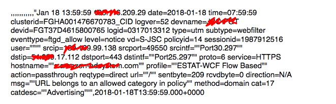
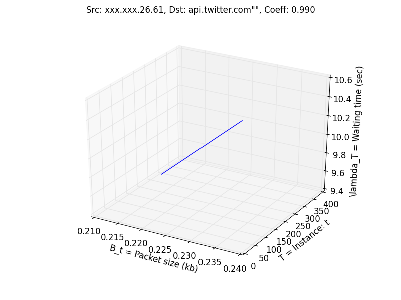
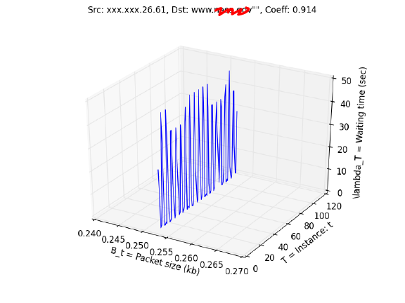
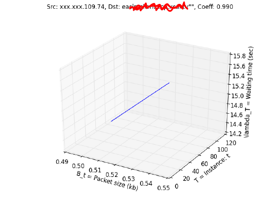
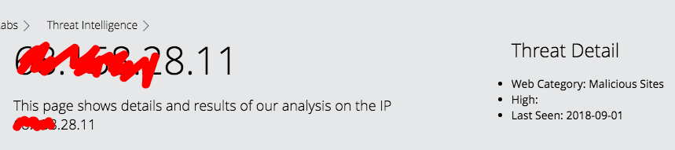

I am given 48 hours of firewall logs during which it is known that the system has been hacked. We find that typically our network is hacked with one of three motivations:
+ a beginner wanting to say they've gotten into the system (usually harmless)
+ to make money by stealing credit card and other sensitive information
+ to gain control of one system and thus have access to other points in the network
It helps to remember most attacks usually follow the killchain which begins with reconaissance (finding vulnerabilities), then sending a lure with the malicious payload attached (usually an ad or email). Once able to execute internally, a malware program will send out beacons at a regular interval to get instructions from an external source. An unfortunate thing with internet protocol is that it runs on the honor system ie. assuming people will use ports for their designated use such as 80 for web traffic, which gives hackers an open door through our firewall. Here we will write a program to identify what entries in a firewall log represent malicious beaconing.
The firewall creates logs each containing 30 minutes of network data. These logs are grouped and compressed into zip files every 6 hours. The logs themselves are csv files, typically 1.5GB, with each entry looking like:
separated by 11 commas. The most important information here for our analysis will be time/date, source and destination IP/port and bytes sent/received.
The Python program I've written takes two command line arguments: the directory in which the zip files are stored and a link to a SQL database. Using a database is optional but I found it necessary as my laptop couldn't handle processing 150+ GB of data and storing variables in local memory without freezing. The workaround is to read each file entry by entry and regularly pushing the information we want to a MySQL table. The processing can instead be done on the cloud through Apache Spark which has Numpy integration. On a more powerful computer, running the program locally would be much more reasonable.
The program utilizes the constant time complexity of Python dictionaries to group communications between unique source and destination IP addresses across all logs. We then predict the probability of a given set of communications to be an instance of beaconing comparing $\lambda_t =$ waiting time between instances $t_n, t_{n-1}$ with $t \in \mathbb{Z}_{>0}$ against $B_t =$ packet size of each instance in kb. The metric used is: \[ \mathbb{P}(\text{beaconing}) = \lbrack (1 + \alpha)^{|\lambda_t| \cdot |B_t|} \rbrack^{-1} \cdot \mathbb{I}_{\left\{T > 100\right\}} \] for all instances $t \in T$, $\alpha = 0.05$. A more intricate measure could easily be created by taking into account more variables.
Upon running the analysis, we are left with only a few suspected communications:
 It's interesting to notice that the first suspected entry met all of our criteria with communications sent precisely at 10 second intervals and all packets being the exact same size. This would be impossible for a human to do coincidentally but upon further inspection we see that the destination is api.twitter.com meaning someone on the network has their Twitter set to refresh every 10 seconds. The second entry has every packet of identical size but the fluctuations in waiting time are questionable. The IP does not come up when searched on the McAfee known threat list.
 Our last suspected entry is identical to the Twitter graph but comes does not come from a known web host. This time when searched in the McAfee threat list, we see that the IP is of a known malicious site so we have found our hacker.